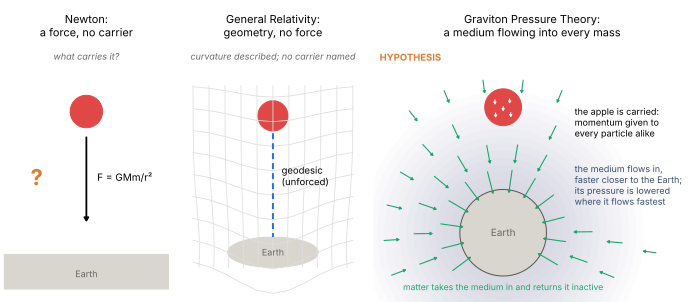
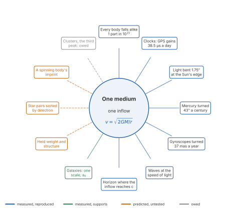
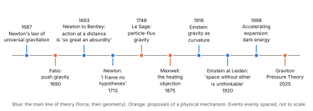
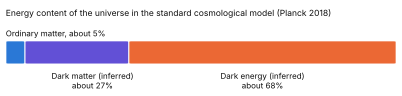
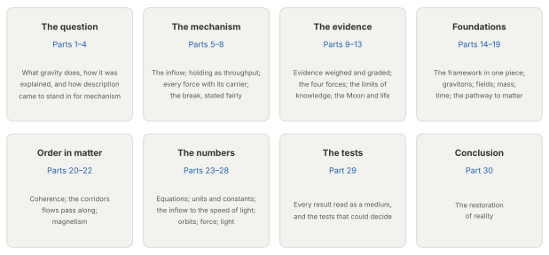

Library › The Unified Framework for the Graviton Pressure Theory
Introduction
to the Unified Framework of the Graviton Pressure Theory --- From Description to Mechanism
1.1 The Return of Causality
Gravity has always been described. It has rarely been explained.
We can predict, to many decimal places, where a planet will be, how a falling body will accelerate, and how much light will bend as it passes the Sun. What we cannot say, in the dominant theories of physics, is what acts. What touches the falling apple? What is exchanged between the Earth and the Moon? What presses a person into a chair?
Graviton Pressure Theory (GPT) answers those questions with a physical medium. Where Newton described gravitational attraction without a mechanism, and Einstein replaced attraction with the curvature of spacetime without naming a carrier, GPT proposes a third path: gravity as the pressure of a physical medium acting on matter.

A fact to begin with
General Relativity’s own description of gravity outside a mass can be written, exactly, as flat space through which something flows inward at the escape speed, [Argued] \(v=\sqrt{2GM/r}\): 11.2 kilometres a second at the surface of the Earth. Painlevé found this form in 1921 and Gullstrand in 1922,12 and it is used today to teach how black holes work: at the horizon, the inflow reaches the speed of light.3 The same equations carry both readings, a curved geometry and a flowing medium, with the same numbers.
General Relativity calls what flows “space” and gives it no properties. GPT proposes that it is a medium, and that the inflow is real. [Hypothesis] That is the whole of the difference, and it is the difference between a description and a cause.
One inflow, and the numbers follow
From that one inflow, calibrated once to Newton’s gravity as Newton’s constant is, the measured numbers of gravity follow without further fitting [Argued] (Figure 1.2): every body falling alike, to one part in \(10^{15}\);4 clocks slowed by height and by speed, so that GPS satellite clocks gain 38.5 microseconds a day; starlight bent 1.75 arcseconds at the Sun’s edge, and radio signals delayed passing it; Mercury’s orbit turned by 43 arcseconds a century; gyroscopes in orbit turned by the Earth’s spin;5 gravitational waves at the speed of light;6 and a horizon where the inflow reaches it (Parts 9, 23, 25 and 26).78910 General Relativity gives every one of these numbers. GPT gives them too, and names what does the work.

What is felt every day
Gravity is met most often not in orbits but in weight: a person in a chair, a book on a shelf, a bridge carrying its load. In GPT, holding a weight still requires energy. A continuous flow of the medium’s momentum travels through the load, through its support, and into the ground, carrying energy with it relative to the medium; it passes through and is not used up [Hypothesis] (Part 6).11 Stop that flow, and the weight falls. The standard account says that a held weight has no work done on it, and that nothing is happening. GPT says that something is happening, every second, and it names what.
Purpose, scope and objective
GPT does not seek to discard its predecessors. It seeks to complete them.
Newtonian force is retained, but given a carrier.
Einsteinian geometry is honoured, as the mathematics of a physical flow, not a substitute for one.
Predictive accuracy is preserved, and no longer at the cost of meaning.
Purpose: to replace description presented as cause with mechanism that can be tested.
Scope: gravitational interaction across scales, from the weight we feel standing still, to tides, orbits, light and time, and into the structure of matter, magnetism and planetary motion.
Objective: a model of gravity that is testable, visualisable, and rooted in a named physical interaction: what touches what, and what is exchanged.
1.2 Description and Mechanism
The central lesson of this framework, learned in writing it, is that physics has, over three centuries, come to accept description in place of mechanism, and then to forget that it made the exchange. Part 2 traces that history in detail.12 Here it is enough to state the distinction plainly, because everything that follows depends on it.
To describe a phenomenon is to state how it behaves: what follows what, by how much, under which conditions.
To give its mechanism is to name what acts: the physical interface between the things involved, what touches what, and what is exchanged.
Both are valuable. A description that predicts is a great achievement. The error is not description. The error is presenting a description as though it were the mechanism, and then treating the question of mechanism as answered, or as naive.
This framework applies one test throughout, to other theories and to its own claims alike:
The interface test. Does the explanation name the physical interface, what touches what and what is exchanged, or does it only describe the action? Where it only describes, the gap is marked as a gap. A name is not a mechanism.
A complete theory of gravity must pass this test for everything gravity is observed to do: not only for orbits and light, but for weight, load, resistance and support, which are how gravity is encountered every moment of every day. Those obligations are set out, item by item, in the companion document The Gravity Constraint Set, and General Relativity is audited against them in The GR Silence Map.13 The audit does not claim that General Relativity is wrong. It records where it speaks, where it is silent, and what is customarily substituted where a mechanism would be.
Where two accounts give the same numbers, the choice between them rests on mechanism [Argued] (Part 8).14 General Relativity says that gravity is not a force, that nothing acts on a falling body, and that gravity’s energy cannot be placed at any point.15 GPT says that a medium is there, that it delivers momentum to every body it carries, and that gravity’s energy is in its pressure. On what exists, only one can be right.
1.3 Historical Arc: From Mystery to Structure
The demand for a mechanism of gravity is not new. It is as old as the law of gravity itself.16
Newton gave the law of universal gravitation and openly declined to give its cause. Privately he called action at a distance through empty space “so great an absurdity” that no competent thinker could accept it;17 publicly, he would frame no hypotheses.18
Pressure and push models followed almost at once. Nicolas Fatio de Duillier in 1690, and Georges-Louis Le Sage in the eighteenth century, proposed that gravity is the shadowing of a universal flux of tiny particles: bodies pushed together, not pulled.19 These models were abandoned in the nineteenth century, chiefly because a moving body should feel drag from such a flux, and because absorbing it should heat matter enormously. Maxwell set out the heating objection himself.20
Einstein reimagined gravity as the curvature of spacetime.21 The theory is extraordinarily accurate. It does not say what, physically, does the curving, or what acts on a body at rest to start it moving. Its own summary is relational: spacetime tells matter how to move; matter tells spacetime how to curve.22 Einstein himself told an audience in 1920 that in General Relativity space has physical qualities, and that in this sense “space without ether is unthinkable.”23
The river. Within a few years of General Relativity, Painlevé and Gullstrand had written its field as an inflow at the escape speed. The medium reading was in the mathematics from the start; it was not taken up.
Modern cosmology preserves its descriptions by adding dark matter and dark energy, inferred from the gap between prediction and observation. In the standard model they make up about 95% of the universe’s energy content; ordinary matter is about 5%.24 After decades of searching, there is still no confirmed direct detection of a dark matter particle.


GPT stands in the lineage of the push models, and it must answer their objections, not ignore them. Where this framework believes it does, it says so; where the work is not yet done, it says that too.
1.4 What Graviton Pressure Theory Proposes
In outline; each part of the framework develops one layer in detail:
These proposals are developed in the parts that follow, and the current working model of the medium, its properties and how they act together, is set out in The Mechanics of the Medium.25
The universe, on this view, does not bend. It presses.
1.5 Scientific Integrity and Transparent Method
GPT is not a theory hidden behind inaccessible mathematics. It is a framework built for scrutiny and replication. Every derivation, analogy and prediction is open to challenge. This framework keeps the historical lineage of ideas in view: acknowledging prior models, correcting their assumptions, and preserving the truths they contain.
GPT proceeds by the following commitments:
No invisible abstraction offered as a mechanism.
No field effect without a medium or structure that carries it.
No force without energy; no motion without transfer.
No stopping point disguised as an answer: where an explanation reaches a primitive, it is marked as the place where a deeper explanation has not yet been found, not as the place where none exists.
How claims are marked
So that readers can see at a glance what is claimed and on what footing, every claim this framework makes about GPT is marked by its status. Accepted fact, independent of GPT, carries no mark. A conclusion this framework argues in detail [Argued], which readers can check for themselves, has a solid underline. A proposal of GPT, not yet tested [Hypothesis], has a dashed underline. A question the framework has not yet answered [Open] has a dotted underline and a small circle. A passage that carries one status throughout has a bar of the same style in the margin. The key is repeated at the start of every part.
The text states each position as it now stands. Where a position has changed since the first edition, the change is recorded in a list at the end of the part, not in the running text.
Two registers
The physics papers of this framework make no claims about purpose or intent. They stand or fall on mechanism and measurement. The philosophical case, that the removal of cause and mechanism also removed mind, meaning and purpose from our picture of the universe, is made separately, in Part 2, in the register where it belongs. The two are related, but neither is allowed to borrow authority from the other.
1.6 Where the Work Stands
Honesty about the state of the work is part of the method. Part 30 gives the full account;26 in brief:
Established. General Relativity predicts gravitational phenomena with great accuracy and does not name a physical carrier of gravitational action. Its field outside a mass can be written exactly as an inflow at the escape speed.
Argued. From the one calibrated inflow, GPT obtains the slowing of clocks, the bending of light, the radar delay, Mercury’s orbit and the horizon, with the measured numbers and no further fitting (Appendix 1.A; Parts 23, 25 and 26). Treating General Relativity’s description as the complete mechanism of gravity is a category error, not a finding. [Argued]27
Hypothesis. That the inflow is a real medium of gravitons; that matter, time and order are built from it; that a galaxy’s rotation, read as dark matter, is the medium brought back into step where the inflow’s acceleration falls to \(a_0\approx1.2\times10^{-10}\) m/s\(^2\) (Part 9);28 and that the old objections to push models are met: steady motion through the medium is not braked, because momentum is the path a body carves (Part 11),29 and matter is not heated, because the exchange passes through it and is returned to the medium (Part 6).
Owed. Galaxy clusters and the third peak of the background light; the law beyond the relaxation boundary; the aberration of gravity from GPT’s own inflow; the size of a spinning body’s imprint; the masses of the particles (Part 30).
GPT can be proved wrong, and its tests are named [Argued] (Part 29):30 pairs of stars sorted by their direction of motion, in data that already exist; a held body’s weight against its structure; a crystal turned on a torsion balance; a spinning rotor; a clock with its internal order changed. Until such tests are carried out, GPT remains a hypothesis. A framework that marks its own gaps invites others to close them. That is the intention.
1.7 Why This Framework Matters Now
A theory of gravity that relies on unseen matter and unexplained energy for most of the universe’s content may be describing the universe faithfully. Or it may be telling us where its description has run out. Either way, the question of mechanism deserves to be asked again: openly, rigorously, and without the charge of naivety that has kept it closed.
GPT asks it. And it restores three commitments that physics once took for granted:
That every motion has a cause.
That no force appears without energy.
That matter and field are not separate, but joined through pressure, exchange and coherence.
If GPT is right, it is more than another theory of gravity. It is a reunification of structure and mechanism. If it is wrong, the questions it asks will still need answers, and the standard it sets, that description must not pass for explanation, will still apply to whatever replaces it.
1.8 What Follows
The thirty parts of this framework build the case in layers (Figure 1.5):
The question (Parts 1–4): what gravity does, how it has been explained, how description came to stand in for mechanism, and what still does not fit.
The mechanism (Parts 5–8): the inflow; holding as throughput; every force with its carrier, and falling and holding as different acts; the break with General Relativity, stated fairly.
The evidence (Parts 9–13): the evidence weighed and graded; the mechanism tested against the four forces, the limits of knowledge, and the tides and rhythms of life.
Foundations (Parts 14–19): the framework in one piece; the graviton; the field’s inflow and swirl; mass as circulation; time as renewal; the pathway to matter.
Order in matter (Parts 20–22): coherence; the corridors along which flows pass; magnetism.
The numbers (Parts 23–28): the equations and what they reproduce; units and constants; the inflow to the speed of light; orbits; every force and its carrier; light and the waves of the medium.
The tests (Part 29): every result read as a medium, what a medium must survive, and the experiments that could decide.
Conclusion (Part 30): the restoration of reality.

Where others wrote geometry, GPT proposes pressure.
Where others drew curves, GPT maps flows.
Where force became an abstraction, GPT seeks to make it real again, and to show its work.
This is gravity, offered for explanation.
Welcome to the pressure field.
1.9 The Bending of Light: One Calibration, One Principle
This appendix shows how the bending of light and the radar delay past the Sun follow in GPT from one calibrated quantity and one stated principle, with no constant chosen to fit them. The structure is not new: Robert Dicke showed in 1957 that a medium which slows light and matter in this way reproduces the classical tests,31 and the idea has been developed since.32 What GPT adds is the physical medium that does the slowing.
Write the depth of the gravitational potential at distance \(r\) from a mass \(M\) as the small dimensionless number \[\Phi(r) = \frac{GM}{c^2 r}.\] At the Sun’s surface, \(\Phi \approx 2\times10^{-6}\).
1. Calibration and clocks.
The one calibration is the inflow, matched to Newton’s gravity: \(v^2 = 2GM/r\). A clock is a structure of the medium’s waves. Near the mass the medium streams past it at the inflow speed, and a clock moving through the medium ticks slower, as each of its internal cycles has farther to travel, by \(\sqrt{1-v^2/c^2}\). So a clock at depth \(\Phi\) runs slow, compared with a clock far away, by \(\sqrt{1-2\Phi} \approx (1-\Phi)\). [Hypothesis] That is the measured gravitational redshift (Pound–Rebka, 1960; the Galileo satellites, 2018),33 and it follows from the inflow without a second calibration. The slowing of moving clocks is the same effect: every clock is slowed by its motion through the medium, whether the medium streams past it near a mass or it travels through the medium itself. [Hypothesis]
2. Principle: rulers.
The same medium that slows matter’s internal processes also sets the size of matter’s structures. A ruler held along the flow, pointing toward the mass, is shorter, as judged from far away, by the same factor \((1-\Phi)\) that slows the clock; a ruler held across the flow is unchanged. Clocks and rulers change together because both are structures of the same medium [Hypothesis] (Part 23). Squashing along the flow only is what gives Mercury’s 43 arcseconds a century; rulers shrinking equally in every direction would give 57. [Argued]
3. Consequence: light is always measured at \(c\) locally.
An observer at depth \(\Phi\), using local clocks and rulers, measures light’s speed as \(c\), as every local experiment finds. Measured from far away, light near the mass is slowed. Relabelling the distances from the mass, as Eddington did, shares the squashing of the radial rulers equally among all directions without changing anything that can be measured; [Argued]34 in that description the local second and every local ruler are rescaled by \((1-\Phi)\), and light near the mass travels at \[c_{\text{far}} = c\,(1-\Phi)(1-\Phi) \approx c\,(1-2\Phi),\] so the medium has an effective refractive index \[n(r) \approx 1 + 2\Phi(r) = 1 + \frac{2GM}{c^2 r}.\] The factor of 2 is not chosen. One half comes from clocks, the other from rulers.
In the variables of The Mechanics of the Medium, the same chain reads: the inflow lowers the medium’s active pressure to \(P/P_0 = 1 - 2\Phi\); clocks and rulers along the flow both scale as \(\sqrt{P/P_0} \approx 1 - \Phi\), with the free-space pressure \(P_0 = \tfrac12\rho_g c^2\), the value at which the pressure law and the clock law agree, since then \(P/P_0 = 1 - v^2/c^2\); and the index is \(n = P_0/P \approx 1 + 2\Phi\).35
4. The bending of light.
A ray passing a mass at closest distance \(b\) is bent toward the region of higher index. Summing the bending along the path gives \[\alpha = \frac{4GM}{c^2 b}.\] For a ray grazing the Sun (\(GM_\odot = 1.327\times10^{20}\,\mathrm{m^3/s^2}\), \(b = R_\odot = 6.957\times10^{8}\) m), \(\alpha = 8.49\times10^{-6}\) radians \(= 1.75\) arcseconds, the value measured in 1919 and since confirmed to high precision.
With clocks alone, and no change in rulers, the index would be \(1 + \Phi\) and the bending would be half as large: 0.875 arcseconds. That is the value Soldner obtained from Newtonian gravity in 1801, and Einstein from the equivalence principle in 1911. The full value requires both halves.
5. The radar delay.
A radar signal passing close to the Sun is delayed by the slower light near it. With the same index, the delay on a single pass is \[\Delta t = \frac{2GM}{c^3}\,\ln\!\frac{4 r_1 r_2}{b^2},\] where \(r_1\) and \(r_2\) are the distances of Earth and the far body from the Sun; a radar echo, which makes the trip twice, is delayed by twice this. This is the Shapiro delay, confirmed by the Cassini spacecraft to about two parts in \(10^{5}\).36
6. No dependence on colour.
If the bending of light is refraction in a medium, it might depend on wavelength. Radio and optical measurements of the bending agree to within a few parts in a thousand,37 so any such dependence must be smaller than that. GPT expects none at leading order: the medium changes the electric and magnetic constants of space together, which leaves it matched for light of every wavelength. [Hypothesis]
What this establishes, and what it does not.
From one calibration (the inflow) and one principle (clocks and rulers change together), GPT obtains the slowing of clocks, the bending of light and the Shapiro delay with no further fitting. [Argued]
These are the same first-order results as General Relativity. Agreement here shows that a medium can do what curvature does. It does not, by itself, show that the medium exists.
The clock rate follows from motion through the medium, and the principle that rulers change with clocks follows from both being structures of the medium. [Hypothesis]
Changes in the Second Edition
This list records what changed from the first edition and why. Changes to the argument alter what the paper claims or how it supports a claim; clarifications improve wording, sources or presentation and leave the argument as it was.
Changes to the argument
The claim that GPT “achieves the same observational match, and often greater precision” is restated. GPT obtains the measured numbers of the classical tests from one calibrated inflow with no further fitting (Appendix 1.A; Parts 23, 25 and 26); it does not claim greater precision than General Relativity, which gives the same numbers.
New: General Relativity’s field outside a mass written exactly as an inflow at the escape speed (Painlevé and Gullstrand), as the opening fact of the framework; the numbers the one inflow reproduces, with Figure 1.2; and holding a weight as a continuous flow through the load, which holding still requires and which is not used up.
“This is not a speculative idea” is replaced by an account of where the work stands: what is established, argued, hypothesis and owed, and the tests by which GPT can be proved wrong (Part 29).
Gravitons as “real, massless directional carriers” are marked as a Hypothesis.
The scope no longer extends to quantum decoherence, which the framework does not treat.
The historic objections to push models (drag and heating) are named, with this framework’s proposed answers, marked Hypothesis.
“What Graviton Pressure Theory Proposes” follows Part 5: the medium flows into every mass and carries each body, momentum given to every particle alike. The shadow between masses, and the stronger pressure on their outer sides pressing them together, are replaced: a push on a body’s outer surface would scale with its area, and every material is measured to be carried alike. Falling and holding are stated as different acts.
The slowing of clocks near a mass follows from the inflow, not from a second calibration: a clock is slowed by the medium streaming past it, by \(\sqrt{1-v^2/c^2}\), which with \(v^2=2GM/r\) is the measured redshift. “The effect of the denser medium” on clocks is corrected to the medium streaming past them.
New Appendix 1.A shows the bending of light and the Shapiro delay following from one calibration and one stated principle: rulers are shortened along the flow only, as Part 23 requires for Mercury’s 43 arcseconds, and Eddington’s relabelling of distances gives the index \(1+2\Phi\) without changing anything measured.
The closing line “This is gravitational structure, finally explained” is now “This is gravity, offered for explanation.”
Clarifications
The opening starts from the question of what acts. New sections: Description and Mechanism (with the interface test), How claims are marked, Two registers, and Where the Work Stands.
The historical arc is extended and sourced: Newton’s letter to Bentley and hypotheses non fingo; the push models of Fatio and Le Sage and why they were set aside; Einstein’s 1920 Leiden address; Painlevé and Gullstrand; the Planck figures for dark matter and dark energy.
A fourth commitment is added: a primitive marks where a deeper explanation has not yet been found, not where none exists.
“Over 90% of the observed universe” is now “about 95% of the universe’s energy content” (Planck 2018). “The void” is now spacetime, since in General Relativity spacetime is not a void.
Jammer’s Concepts of Force is cited to its first edition (1957). “It fulfils them” is now “It seeks to complete them”; “corridors” is now “flows”.
What Follows maps all thirty parts in eight groups, matching Part 30, with Figure 1.5. Figures 1.1 to 1.5 are new.
Status labels in square brackets are replaced by marks drawn under the text (see the key). The status of each claim is unchanged.